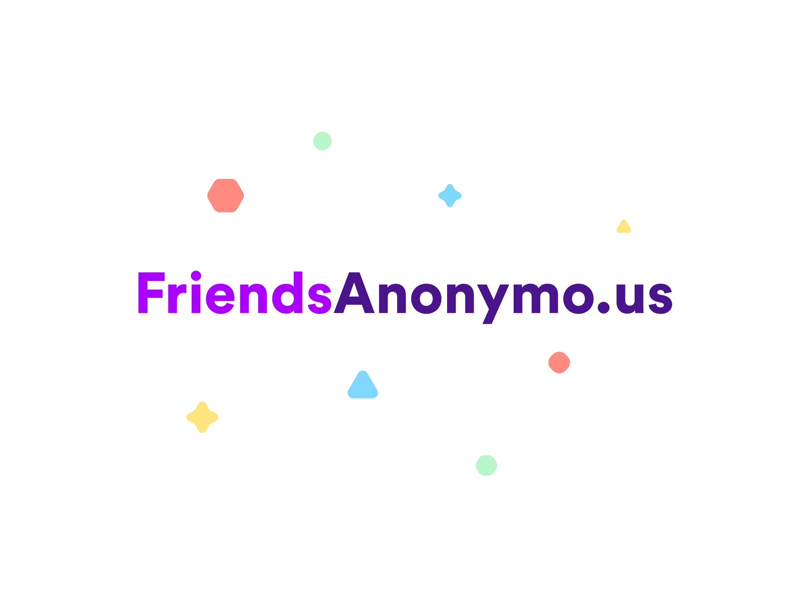

Derek Mark Torsani


Talking about your problems isn't necessarily fun and it's certainly not comfortable. I have personally experienced different public counseling sessions for different topics in the past. The professional counseling was valuable but what was most impactful was the ability to be around other people who have similar experiences to my own. Discovering that others relate to you and can share advice on what has helped them in their unique situations turned out to be some of the most healing that took place.
One of the problems with these groups sessions is that ones that have a professional counselor are not typically cheap. The other issue is you most likely cannot separate your identity from the session to get the most out of it.
That's where the idea for FriendsAnonymo.us arose. I kept thinking about old AOL chat rooms, an the ability to be anyone you want to be, and how catfishing works. There's actually something positive that we can gather from those kind of experiences, which is the ability to be anonymous, share true feelings, and communicate through message only. FriendsAnonymo.us captures those aspects and turns them into a community operated through Slack, allowing members to remain anonymous and discuss anything they want in a comfortable space.
In the community are a variety of groups, which are constantly being added as the need for them arises. These groups range from Autism/Aspergers to LGBTQ, and Underrepresented to Eating Disorders. People are welcome to join these groups as they please and talk to other members about their experiences. On the website, I created an anonymous name generator using a JS library. There is also a library of anonymous profile images, sourced from Unsplash.
I plan on growing the community by continuing to share the concept with people I meet. As members continue to join and we find there are a handful of people discussing a specific topic, we will host professional counselors Q&A's in those groups. I hope this can provide a safe place for like-people to discuss hard topics anonymously and comfortably.
derektorsani (at) gmail (dot) com
@dmtors